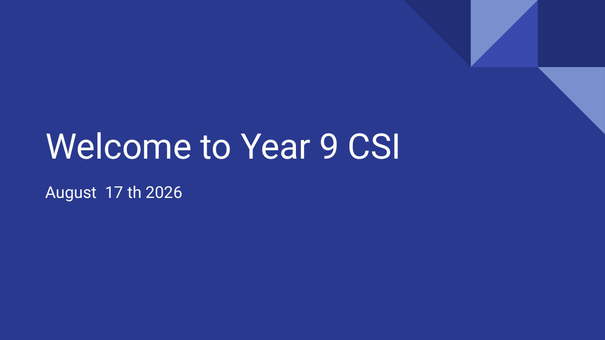
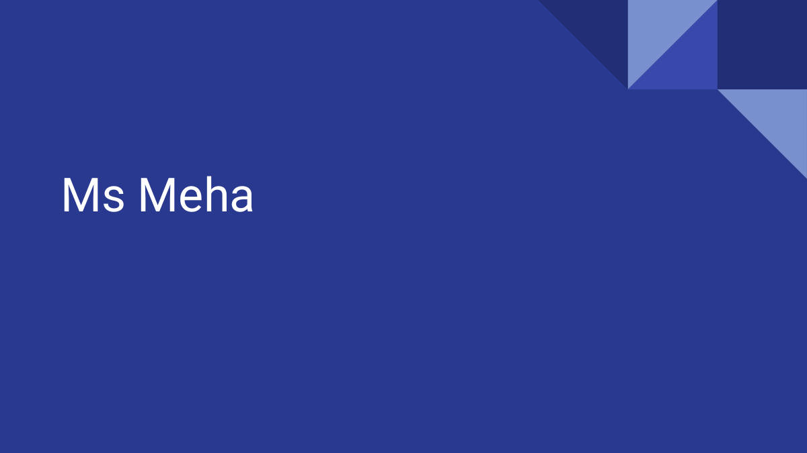
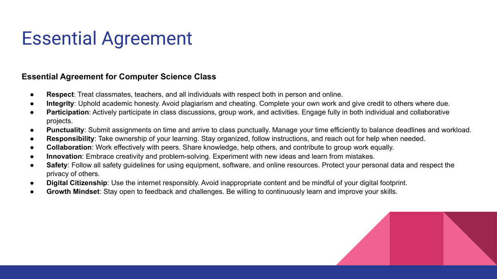
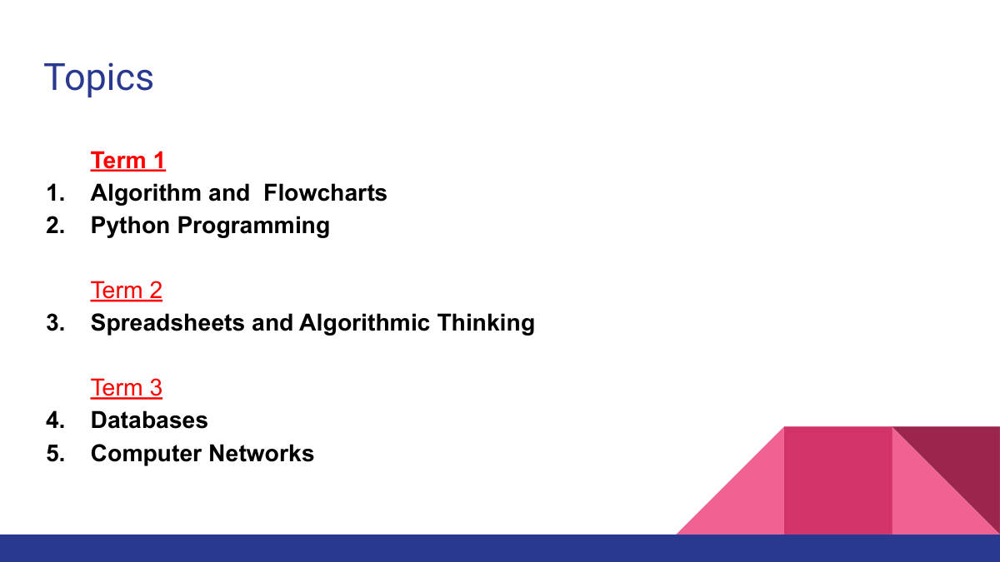
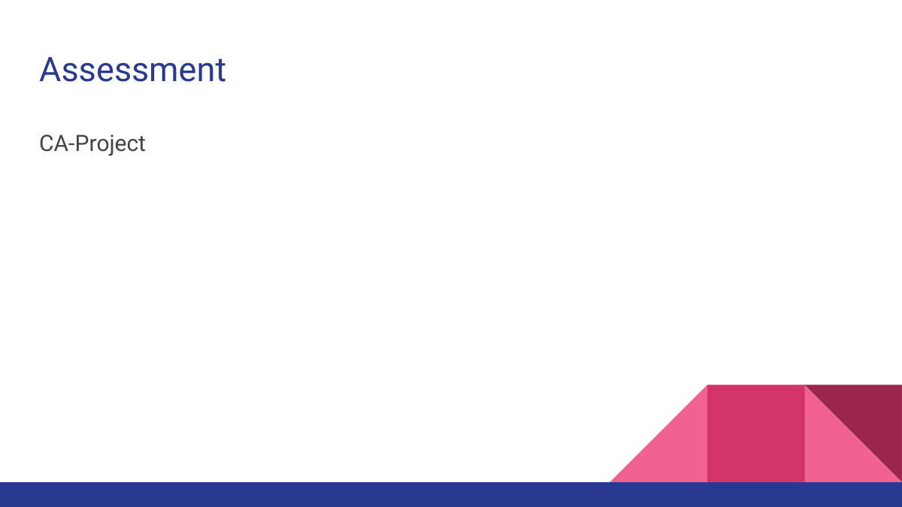

첫 수업에서 나눠주는 수업 약속(Essential Agreement)과 연간 배울 내용(Topics)을 알려주는 자료다. 새 학년이 시작될 때 선생님이 '우리 반은 이렇게 공부한다'를 정리해 주는 오리엔테이션 성격의 글이다. 2026년 8월 17일, Ms Meha 선생님 수업으로 적혀 있다.
수업 약속은 열 가지다. 존중(Respect), 정직(Integrity)은 남의 것을 베끼지 않고 내 힘으로 하는 것이며 다른 사람 것을 썼으면 출처를 밝히는 것이다. 참여(Participation), 시간 지키기(Punctuality)는 수업에 늦지 않고 과제를 기한 안에 내는 것, 책임(Responsibility)은 모르면 도움을 요청하는 것까지 포함한다. 협력(Collaboration)은 모둠 활동에서 똑같이 몫을 나누어 하는 것이다.
나머지 약속은 컴퓨터 수업이라서 특히 강조되는 것들이다. 창의(Innovation)는 실수에서 배우며 새 방법을 시도하는 것, 안전(Safety)은 장비와 프로그램을 규칙대로 쓰고 개인정보를 지키는 것이다. 디지털 시민의식(Digital Citizenship)은 인터넷에 남는 흔적, 즉 디지털 발자국(digital footprint)을 생각하며 쓰라는 뜻이다. 성장 마인드셋(Growth Mindset)은 지적(feedback)을 받아들이고 계속 실력을 키우려는 태도다.
일 년 동안 배울 주제는 학기별로 나뉜다. 1학기(Term 1)는 알고리즘과 순서도(Algorithm and Flowcharts), 파이썬 프로그래밍(Python Programming)이다. 2학기(Term 2)는 스프레드시트와 알고리즘적 사고(Spreadsheets and Algorithmic Thinking), 3학기(Term 3)는 데이터베이스(Databases)와 컴퓨터 네트워크(Computer Networks)다. 평가는 CA-Project, 즉 과제·프로젝트로 하는 평가라고 적혀 있다.

이 쪽은 수업 첫 시간 표지로, 과목명 Year 9 CSI와 날짜(2026년 8월 17일)만 적혀 있다.

이 쪽에는 담당 선생님 이름 Ms Meha만 적혀 있다

컴퓨터 과학 수업에서 지켜야 할 약속이 존중·정직성·참여·시간 엄수·책임감·협업·혁신·안전·디지털 시민의식·성장 마인드셋 열 가지로 정해져 있다.
정직성 항목은 표절과 부정행위를 금지하며, 남의 것을 참고했으면 출처를 밝히라고 요구한다.
안전과 디지털 시민의식 항목은 온라인에서 자기 개인정보를 지키고, 남의 사생활을 존중하며, 디지털 발자국을 의식하라고 말한다.

한 해 동안 배울 주제는 모두 5개이며, 학기별로 나뉘어 있다.
1학기에 알고리즘·순서도와 파이썬을, 2학기에 스프레드시트, 3학기에 데이터베이스와 컴퓨터 네트워크를 배운다.

이 과목의 평가는 CA-Project(수행평가 프로젝트) 방식으로 이루어진다.
이 수업의 큰 질문(Big Question)은 어떻게 하면 컴퓨터가 문제를 제대로 풀도록 명확한 단계를 계획할 수 있는가이다. 컴퓨터는 사람처럼 알아서 눈치껏 해주지 않고, 시킨 대로 정확히(exactly) 그대로만 따라간다. 그래서 코드를 쓰기 전에 계획을 먼저 세워야 실수를 줄이고 결과를 검사(test)할 수 있다는 것이 이 자료가 계속 말하는 이유다.
자료 맨 앞에 나오는 흐름은 계획(Plan) → 그림(Diagram) → 코드(Code) → 검사(Test)다. 즉 머릿속 생각을 먼저 알고리즘(algorithm), 곧 문제를 푸는 단계별 순서로 적고, 그 다음 그 순서를 그림으로 그린 것이 순서도(flowchart)이며, 코딩은 그 뒤에 온다. 순서를 거꾸로 해서 바로 코드부터 쓰는 것이 아니라는 점이 핵심이다.
순서도에 쓰이는 기호들도 자료에 그림으로 나와 있다. START(시작), INPUT(값을 넣음), PROCESS(계산·처리), DECIDE(판단), OUTPUT(결과를 내보냄)이며, 이 중 DECIDE는 마름모(diamond) 모양이라 다른 상자들과 생김새가 다르다. 모양이 곧 그 칸이 하는 일을 뜻하므로, 모양과 뜻을 짝지어 외워 두는 것이 좋다.
수업이 끝났을 때 할 수 있어야 하는 것(Learning Outcomes)은 세 가지로 적혀 있다. 첫째 알고리즘이 무엇이고 왜 쓰는지 설명하기, 둘째 주요 순서도 기호와 그 뜻을 구분하기, 셋째 간단한 계산 문제에 대해 알고리즘을 쓰고 순서도를 그리기다. 결국 이 수업의 목표 결과물은 '간단한 계산을 하는 알고리즘 한 개 + 그것을 옳게 그린 순서도 한 장'이다.
An algorithm is a step-by-step sequence of instructions for solving a problem. We write it before coding because a computer only follows exactly what it is told and cannot guess what we mean. Planning the steps first reduces mistakes and gives us something to test the finished result against.
The order is Plan, Diagram, Code, Test. In Plan you write the problem-solving steps as an algorithm; in Diagram you draw those steps as a flowchart; in Code you turn the plan into a program; in Test you check the result works correctly. Writing code first and planning afterwards is the wrong order.
An algorithm is the set of steps for solving a problem, usually written out in order as words. A flowchart is a diagram that shows those same steps as a picture, using symbols joined by arrows. So the flowchart is a visual version of the algorithm, and the algorithm is written first.
Any three of: START, which marks the beginning of the flowchart; INPUT, which is where a value is put into the program; PROCESS, which carries out a calculation or processing step; DECIDE, which asks a question so the flow can branch; OUTPUT, which sends the result out. One mark is given for each correctly named symbol with its correct purpose.
The DECIDE symbol is drawn as a diamond. It is useful because the shape itself tells you what that step does, so a reader can see at a glance where a decision is made without reading all the text. Matching shape to meaning is why the symbols should be learned as pairs of shape and purpose.
The statement is wrong because a computer does not work things out for itself the way a person does. It follows the instructions it is given exactly as they are written, so a missing step simply will not happen. This is the reason the lesson insists on planning clear, complete steps before coding.
The Big Question is: how can we plan clear steps so that a computer solves a problem properly? It asks students to be able to break a problem down into exact, ordered instructions rather than vague ones. It links to the unit's aim of writing an algorithm and drawing a correct flowchart for it.
First, explain what an algorithm is and why it is used. Second, identify the main flowchart symbols and what each one means. Third, write an algorithm and draw a flowchart for a simple calculation problem. One mark is awarded for each outcome stated correctly.
Integrity means doing your own work without copying from others, and acknowledging the source if you do use someone else's work. Digital Citizenship means thinking about your digital footprint, that is, the trace you leave behind on the internet, and using it responsibly. Both are about being honest and responsible in how you work and how you behave online.
Term 1 covers Algorithms and Flowcharts and Python Programming. Term 2 covers Spreadsheets and Algorithmic Thinking. Term 3 covers Databases and Computer Networks. The course is assessed by CA-Project, that is, assessment through coursework and projects.